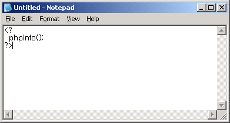
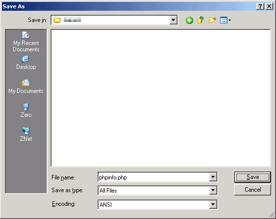
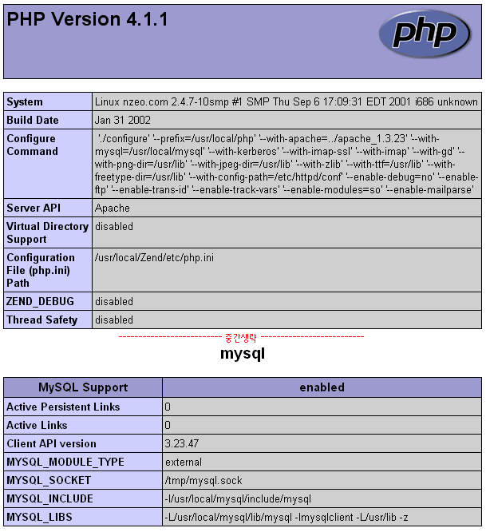

|
제로보드 설치 조건 제로보드는 PHP+MySQL 로 제작되어진 공개형 무료 게시판입니다. PHP나 MySQL을 알지 못하더라도 제로보드를 사용하는데는 아무런 문제가 없습니다. 하지만 기본적으로 계정이 무엇인지, FTP를 이용하는 법, 약간의 HTML 정도는 아셔야 겠지요? 그리고 제일 중요한 것은 자신의 계정에서 PHP와 MySQL을 지원하여야 한다는 것입니다. 일반적으로 많이 알려진 무료 계정업체들은 PHP와 MySQL을 지원하지 않습니다. 그럼 자신의 계정에서 PHP와 MySQL을 지원하는지에 대해서 알아보도록 하겠습니다. 이미 아시는 분은 넘어가셔도 됩니다. 방법은 2가지입니다. 계정을 제공하는 업체에 문의하는 방법과 자신이 직접 알아보는 방법입니다. PHP와 MySQL을 지원하는 업체라면 왠만하면 미리 알려주기 때문에 지원 여부를 알아보는 것은 그다지 어렵지 않을 것입니다. 그럼 자신이 직접 알아보는 방법에 대해서 알아보도록 하겠습니다. 우선 메모장(notepad)를 실행합니다. 그리고는 다음과 같이 입력하세요.  위와 같이 입력하였다면 phpinfo.php 라는 파일로 저장하세요.  참고로 지금 보시는 스크린샷은 영문 윈도즈이기 때문에 영어로 나옵니다. ^^ 그럼 저장된 phpinfo.php 파일을 자신의 계정으로 업로드하세요. 계정으로 파일 업로드 하는 방법은 아시죠? 그럼 업로드가 되었으면 브라우저에서 확인을 하여 봅시다. 브라우저에서 주소창에 http://자신의홈페이지주소/phpinfo.php 라고 하면 됩니다.  만약 위와 같은 화면이 뜬다면 그 계정은 PHP+MySQL을 지원하는 계정입니다. 물론 이 방법을 알아보기 전에 이미 지원 여부를 확인하셨으리라 생각합니다. 그럼 다음으로 넘어가서 제로보드를 설치하여 봅시다. |